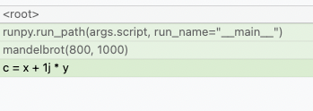
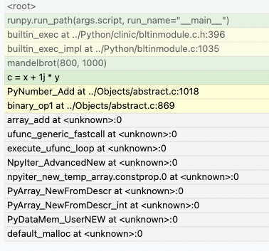
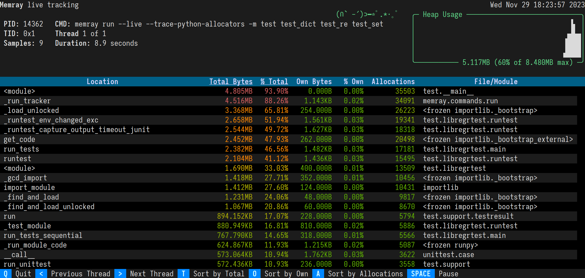

The run subcommand¶
The run subcommand is used to launch a new Python process and track the memory allocations it
performs while it runs.
Basic tracking¶
The general form of the run subcommand is one of:
memray run [options] file.py [args]
memray run [options] -m module [args]
Like the Python interpreter itself, the run subcommand can take a path to a Python file to run,
or the name of a Python module to run if you use the -m flag. While it runs, memory allocations
and deallocations throughout the program are tracked. By default they are saved into a file with the
following pattern:
memray-<script>.<pid>.bin
where <script> is the name of the executed script and <pid> is the process id it ran with.
A different filename can be provided with the -o or --output argument.
Native tracking¶
Overview¶
Memray supports tracking native C/C++ functions as well as Python functions. This can be especially useful
when profiling libraries that have extension modules (such as numpy or pandas) as this
gives a holistic vision of how much memory is allocated by the extension and how much is allocated by Python itself.
For instance, consider the Mandelbrot example from the Example Applications for Memray section with native tracking disabled. Some of the most important allocations happen when operating on NumPy arrays:
Here, we can see that the allocation happens when doing some math on NumPy arrays but unfortunately this doesn’t inform us of what exact operation is allocating memory or how temporaries are being used. We also don’t know if the memory was allocated by NumPy or by the interpreter itself. By using the native tracking mode with Memray we can get a much richer report:
In this native report, we can see all the internal C calls that are underneath. We can see that the memory allocation
happens when the NumPy arrays are being added, due to PyNumber_Add appearing in the stack trace. Based on
PyNumber_Multiply not appearing in the stack trace, we can conclude that the temporary array created by NumPy is
immediately freed (or that it didn’t need to allocate memory in the first place, perhaps because it could reuse some
already allocated memory).
Tip
Memray will also include inlined functions and macros when native tracking is enabled.
Caution
Activating native tracking has a moderate impact on performance as every instruction pointer in the call stack needs to be resolved whenever an allocation happens. This effect is more noticeable the more allocations the traced application performs.
Check the section on native symbolification for more information on how to obtain the best reports with native information, and on how to debug problems in reports with native information.
Usage¶
To activate native tracking, you need to provide the --native argument when using the run subcommand:
memray run --native example.py
This will add native stack information to the result file, which any reporter will automatically use.
Important
When generating reports for result files that contain native frames, the report needs to be generated on the same machine where the result file was generated. This is because the shared libraries that were loaded by the process need to be inspected by Memray to get the correct symbol names.
When reporters display native information they will normally use a different color for the Python frames than the native
frames. This can also be distinguished by looking at the file name in a frame, since Python frames will generally come
from source files with a .py extension.
Python allocator tracking¶
Memray normally tracks allocation and deallocation requests made to the system allocator, but by default it won’t see individual Python objects being created. That’s because the Python interpreter normally uses its own memory pools for creating most objects, only making calls to the system allocator as needed to grow or shrink its memory pools. Our documentation on python allocators describes this memory pooling in greater detail. This behavior speeds the Python interpreter up, and by extension speeds up profiling with Memray, while still allowing Memray to show you each place where your program needs to acquire more memory.
You can ask Memray to show you each individual object being created and
destroyed, instead, by providing the --trace-python-allocators argument to
the run subcommand. This records a lot more data and makes profiling much
slower. It will show you all allocations, even ones that don’t result in your
program requesting more memory from the system because the interpreter already
had memory available for reuse. It can be useful in some cases, though,
especially when tracking down memory leaks.
Note
This acts also as an alternative way to run with PYTHONMALLOC=malloc but
in a way that allows distiguishing allocations made by using the system
allocator directly and ones made by using the Python allocator.
memray run --trace-python-allocators example.py
Caution
Tracking the Python allocators will result in much larger report files and slower profiling due to the larger amount of data that needs to be collected.
Live tracking¶
Overview¶
Memray supports presenting a “live” view for observing the memory usage of a running Python program.
Usage¶
You can run a program in live mode using run --live:
memray3.9 run --live application.py
Immediately Memray will start your application in the background and will run a TUI in the foreground that you can use
to analyze your application’s memory usage. If you don’t want to run your program in the background, you can instead
use run --live-remote:
memray3.9 run --live-remote application.py
In this mode, Memray will choose an unused port, bind to it, and display a message saying:
Run 'memray live <port>' in another shell to see live results
It will wait for you to run:
memray3.9 live <port>
in another terminal window to attach to it. Regardless of whether you choose to use one terminal or two, the resulting TUI is exactly the same. See Live Reporting for details on how to interpret and control the TUI.
Tracking across forks¶
Overview¶
Memray can optionally continue tracking in a child process after a parent process forks. This can be useful when using
multiprocessing, or a framework utilizing a pre-fork pattern like Celery or Gunicorn.
Usage¶
To activate tracking through forks, you need to provide the --follow-fork argument to the run subcommand:
memray run --follow-fork example.py
In this mode, each time the process forks, a new output file will be created for the new child process, with the new child’s process ID appended to the original capture file’s name. The capture files for child processes are exactly like any other capture file, and can be fed into any reporter of your choosing.
Note
--follow-fork mode can only be used with an output file. It is incompatible with --live
mode and --live-remote mode, since the TUI can’t be attached to multiple processes at once.
Losing capture files after OOM Errors¶
When a process runs out of memory, this commonly causes an Out Of Memory error, or “OOM Error”. That causes the process to be killed by its operating system. Within orchestrations like Kubernetes the termination of the main process might immediately lead to the destruction of the container and the loss of the files that Memray uses to collect its results.
When running memray run myprogram.py a capture file gets created on the file
system, but the entire file system will be thrown away as soon as the
orchestration cleans up the container. If the program exits unexpectedly,
perhaps because the kernel kills it due to an OOM error, the orchestration might
throw away the capture file before you ever get a chance to use it. Since Memray
is often used to chase memory leaks, this condition might happen more often than
you’d like.
Since Memray is running in the same process as your application, it has no way to prevent this data loss (by sending it over the network, for example) because any work it does will be terminated when the process crashes.
Instead of directly calling memray run myprogram.py you can wrap it in
a script that will run Memray and run post-processing operations on the capture
file. That way, the container won’t be destroyed by the orchestration until
after the wrapper script exits, rather than being destroyed as soon as the
Python script being tracked by Memray exits.
memray run --output /tmp/capture.bin myprogram.py
echo "Program finished"
# Do your post-processing here. This example just logs a summary of what's
# in the capture file, but you might want to generate reports from it and
# copy them over the network to some persistent storage, for instance.
memray summary /tmp/capture.bin
Aggregated capture files¶
If you supply the --aggregate argument to memray run, it will write
much smaller capture files. Instead of containing information about every
individual allocation performed by the tracked program, a capture file produced
using --aggregate will contain some statistics about the process’s
allocations aggregated by the location where the allocation happened.
Specifically, for every location where the tracked process performed any allocations, an aggregated capture file includes a count of:
How many allocations at that location had not yet been deallocated when the process reached its heap memory high water mark
How many bytes had been allocated at that location and not yet deallocated when the process reached its heap memory high water mark
How many allocations at that location were leaked (i.e. not deallocated before tracking stopped)
How many bytes were leaked by allocations at that location
These counts provide enough information to generate flame graphs. In fact, this information is enough to run most of our reporters, with just a few exceptions:
You cannot find temporary allocations using this capture file format, since finding temporary allocations requires knowing when each individual allocation was deallocated.
You cannot use the stats reporter with this capture file format, because it needs to see each individual allocation’s size.
You cannot use
--aggregatewith live tracking, since the live TUI needs to see each allocation as it happens.
Also, note that if the process is killed before tracking ends (for instance, by the Linux OOM killer), then the process will die before it finishes calculating its statistics, and so no useful information is ever written to the capture file. With the default file format, the capture file is usually still usable even if the process crashes or is killed, but with the aggregated file format it is not.
If you can live with these limitations, then using --aggregate results in
much smaller capture files that can be used seamlessly with most reporters.
CLI Reference¶
Run the specified application and track memory usage
usage: memray run [-m module | -c cmd | file] [args]
Named Arguments¶
- -o, --output
Output file name (default: <process_name>.<pid>.bin)
- --live
Start a live tracking session and immediately connect a live server
Default:
False- --live-remote
Start a live tracking session and wait until a client connects
Default:
False- --live-port, -p
Port to use when starting live tracking (default: random free port)
- --aggregate
Write aggregated stats to the output file instead of all allocations
Default:
False- --native
Track native (C/C++) stack frames as well
Default:
False- --follow-fork
Record allocations in child processes forked from the tracked script
Default:
False- --trace-python-allocators
Record allocations made by the pymalloc allocator
Default:
False- -q, --quiet
Don’t show any tracking-specific output while running
Default:
False- -f, --force
If the output file already exists, overwrite it
Default:
False- --compress-on-exit
Compress the resulting file using lz4 after tracking completes
Default:
True- --no-compress
Do not compress the resulting file using lz4
Default:
False- -c
Program passed in as string
Default:
False- -m
Run library module as a script (terminates option list)
Default:
False
Please submit feedback, ideas, and bug reports by filing a new issue at https://github.com/bloomberg/memray/issues